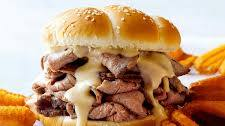

Roast Beef Sandwhich Recipe

Indulge in the savory goodness of our classic Roast Beef Sandwich. This delectable creation features succulent roast beef nestled between slices of freshly baked bread, creating a symphony of flavors that will satisfy your taste buds.
- Sliced roast beef
- Freshly baked bread slices
- Mayonnaise
- Dijon mustard
- Swiss cheese
- Lettuce leaves
- Sliced tomatoes
- Red onion, thinly sliced
- Salt and pepper to taste
- Start by laying out the slices of freshly baked bread on a clean surface.
- Spread a layer of mayonnaise on one side of each bread slice.
- On half of the bread slices, spread a thin layer of Dijon mustard for an extra kick.
- Layer the sliced roast beef on top of the bread slices with mayonnaise.
- Place a slice of Swiss cheese on top of the roast beef.
- Add lettuce leaves, sliced tomatoes, and thinly sliced red onion.
- Season with salt and pepper to taste.
- Top with the remaining bread slices to complete the sandwiches.
- Cut each sandwich in half diagonally for a stylish presentation.
- Serve and enjoy your mouthwatering Roast Beef Sandwich!